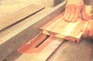

Solutions For Household Storage
Making sliding, wood bed boxes that store clothing and make the home cleaner and building a wood bike rack, including instructions, diagrams.
By David Mukamal Camp
April/May 1997
MOTHER'S WOODSHOP
BED BOX PLANS AND BIKE RACK PLANS © 1996 DAVID MUKAMAL CAMP
As my little house gets fuller and fuller with the trappings of life, I find myself searching for unfulfilled crannies to store things in. Lately I've had my eye on that space under the bed; perhaps it can hide more than stray socks and unappreciated cat toys. And I've been wondering about all those bikes in the garage; is there a way they can take up less floor space? I've seen clever ideas for storage solutions in a number of mail-order catalogs, but none really met my specific needs. Drawing from these sources of inspiration, I decided to build my own "under the bed boxes" to hold sweaters, winter items, etc., and a stackable bike rack that mounts like a pole lamp to free up some space in the garage.
Making the Bed Boxes
These boxes work like big drawers under the bed, but because of the wheels on the sides, you don't have to make a cabinet for them. The lid keeps out dust. Rather than pulling forward, the lid slides to the back, making it easy to access the contents.
I designed the boxes to hold eight sweaters apiece, and chose to build them out of aromatic cedar for both the smell it imparts to the clothing and its rumored moth deterrence. Four of these boxes fit nicely under my queen-size bed.
Aromatic cedar trees don't grow very large, so most of the boards are less than 3 1/2" wide. They have a plethora of knots and a wildly irregular grain; therefore, when buying this wood, figure in a generous allowance for waste. To make four of these boxes, get at least 36 board feet of rough lumber, two sheets of 1/4 " melamine for the lids and bottoms, four pulls of your choice and 16 wheels (see the source list at right).
Rough cut the stock 2 inches longer than the finished dimensions for the sides (A) and ends (B and C), and mill it to Y'' thickness (photo 1). Joint an edge of each piece as shown in photo 2, then rip it parallel on the table saw before jointing its other edge. Sharp jointer knives, a shallow cut and slow feed rate will all help minimize grain tear-out, but you have to accept the fact that chunks will break out anyway. It's best to adopt the attitude that defects add to the character of the cedar, and simply orient all the worst sides in the same direction when you glue up the panels-and put those on the inside of the box.
I put together panels of 30"-long boards for the sides and 25" boards for the ends, gluing planks together two at a time and then gluing pairs together, and so on until I had enough width to cut the individual pieces. When dry, flatten the panels as needed with the belt sander. Next, rip the box sides and ends to the size indicated in the cutting list, plus 1/32" to clean up on the jointer. Now trim the best end of each and cut them to length.
Grooves and Rabbets
The lids and bottoms (D) both slide past the backs (C) in grooves cut in the sides (A) and fronts (B) as shown in the plans. Install dado blades in your table saw to cut a groove wide enough to accept the melamine. Set the depth of cut at 3/8" and position the fence 1/2" from the outside of the blades.
Place the less-than-perfect surface of each piece down on the machine and cut a groove along both edges. Be sure to keep the work-piece snug to the fence and apply firm downward pressure as you cut the grooves (photo 3).
At the corners of these boxes, the ends fit into rabbets cut into the sides. To cut the rabbets, leave the dado set up exactly as you have it, but move the fence to 3/4" from the outside of the blades. Using the miter gauge to guide the material as you crosscut, place the end of each board against the fence and make one pass to establish the shoulder of the rabbet (photo 4). Make subsequent passes, shifting the board away from the fence for each cut, until all the waste is removed (photo 5).
Lids and Bottoms
You can use any 1/4" sheet goods for the lids and bottoms (D) of your bed boxes. I used white melamine for the lids and medium-density fiberboard (MDF) for the bottoms. Later, a fellow woodworker told me the MDF would forever outgas formaldehyde; to prevent this, I sealed it with three coats of lacquer. In retrospect, I'd use melamine for both the lids and bottoms, since this product is already sealed.
Because the sheets are too big to safely cut on the table saw, I clamped both sheets together and cut two sections to length, using a straightedge to guide my portable circular saw (photo 6). Then I set the fence on the table saw to rip these pieces to width as indicated in the cutting list.
Stack the lids together and secure them with a pair of clamps. Then drill a 3/4." finger hole centered within the width, 2" from the edge.
Before assembling the boxes, it's a good idea to drill the holes for the pulls and check to make sure the width of the back (C) equals the distance between the grooves in the sides.
Run a bead of yellow glue in each rabbet, fit the front end in place, and secure it with three finishing nails driven through the sides. Center the back end between the grooves and glue, and nail it in place. Now slip the bottom in to square up the assembly, and tack it in place with wire brads. Use some 1/2" scrap material to support the back while you hammer in the brads.
When the glue is dry, sand and finish the outsides with a clear lacquer or varnish. Leave the insides unfinished so that sweet cedar smell can work its magic. After the finish has cured, drill 7/32" holes for the wheel axles at 9/16" from the bottom edge and 1 1/2" from the ends. Fit the tire onto the wheel, slip it onto the axle followed by a small flat washer, and glue the axle in place.
BUILDING A BIKE BACK
If you don't have a drill press in your shop, this project is the perfect excuse to get one-you'll need it for most of the steps. The adjustability of this bike rack depends on having straight holes, accurately drilled 1 1/2" apart.
Start by milling one blank of the hardwood of your choice (I used alder) to a finished size of 1 3/4" x 3" x 78" and another to 1 3/4" x 2" x 64". You'll drill the holes in these pieces and later cut them apart to make the uprights (A), legs (B), spanners (C), top support (D), and spacers (E), as shown in the plans.
Indexing the Holes
Install a 5/16" brad point bit in the drill press chuck, and position the drill press table at the best height for drilling through the 3" width. Set up a roller stand or some other support for the far end of the material, as shown in photo 1. Clamp a 1 1/2" x 3" fence to the drill press table so that the bit is positioned on center to the edge of the board.
Mark the position for the first hole 2" from the end and the second hole 1 1/2" from there. Clamp the blank to the fence and drill the first hole all the way through (photo 2).
To index the rest of the holes, you need a pointer made of 1/4" scrap as shown in photo 3. Drill a i(6' hole in the scrap, and saw a slot from the edge to the hole. Now shift the blank so the second mark is under the drill bit, clamp it to the fence, line up the pointer with the first hole, and screw it to the fence (photo 3). Now drill the rest of the holes in the blank, referencing each from the one you drilled before (photo 4). Repeat this process for the shorter blank, shimming it up to the top of the fence with some 1" scrap.
Now cut these blanks into 7/8" strips, as shown in photo 5. Clean up one surface on the jointer; then plane the other side down to the finished thickness of 3/4" (photo 6).
Cut the legs (B) from the pieces made from the smaller blank. Use a doweling jig to guide you in drilling a 1/4" hole centered on the end of each leg to accept the leveling bolts (photo 7). Choose the ends that have 2" of undrilled length.
Cut the spanners (C), top support (D), and spacers (E) from the remaining lengths of the smaller blank. Mill some 4 x 4 stock to the dimensions given in the cutting list for the bike hooks (F) and end pads (G).
Making More Holes
Head back to the drill press for the next steps in preparing the bike hooks. First you need to drill a pair of holes that correspond to those in the uprights. Drill them 3" apart, centered along the length of the bike hooks as shown in the plans.
Next install a 1 1/2" Forstner bit to cut the arcs that will support the bicycle frame.
Forstner bits are designed in such a way to make it possible to bore a hole on the edge of a board. Clamp two pieces of scrap wood to the drill press table to reference this hole at the same point on both ends of each bike hook (photo 7). Drill one end, flip over the stock, and drill the other end.
Now lay out the shape of the bike hooks by enlarging the pattern using the gridded drawing in the plans. Draw one half on one of your pieces and cut it out on the band saw. Fair the curves using a file or sandpaper; then trace the shape onto another piece. Flip the first one over and trace it onto the other half of the second piece. You can stack the pieces with double-sided carpet tape between them and cut out a couple at a time (photo 8). Finalize their shape using files and sandpaper.
At this point I routed a slight chamfer on the corners of all of the pieces just to give the project a more refined look. This step is optional. Sand the pieces and apply the finish of your choice.
Finally, use a 1" Forstner bit to drill two shallow holes in the bottom end pad (G) as shown in the plans, and epoxy the heads of the leveling bolts in place (photo 9). Attach the upper end pad (G) to the top support (D) with a pair of 2" flat head wood screws. Cover the undersides of the end pads with cork (available at most hobby stores) adhered with double-sided carpet tape (photo 10).
Putting It All Together
Measure the distance from floor to ceiling, and put together your bike rack using holes that will give you the necessary length, from top end pad to the bottom of the legs, minus 1 3/4" to 2 1/2". You'll make up this distance with the bottom end pad and leveling bolts. Assemble the top support (D) between the two spanners (C) using two 3" carriage bolts with washers, and wing nuts. Now fit this assembly between the main uprights and slip a 4 1/2" carriage bolt through at the bottom of the spanners. Place the legs between the uprights at the bottom and secure them with two 4 1/2" bolts.
Now attach two bike hooks near the top of the uprights with a pair of 6" carriage bolts, washers, and wing nuts. Prepare the bottom end pad by screwing the nuts all the way on, and fitting washers over the ends of the leveling bolts. Stand the bike rack up, placing the top against the ceiling, and fit the legs onto the leveling bolts. Position the bike rack plumb and raise the nuts on the leveling bolts to apply enough tension to snug the bike rack in place. You may need to put a thin piece of wood under the bottom pad to take up some slack. Position the remaining pair of bike hooks just high enough to get your bikes off the floor, and bolt them in place using 6" carriage bolts and putting the spacers (E) between the uprights.
You'll be surprised how steadily this rack will hold four bikes, and I'm sure that, like me, you have that extra space filled in no time.
Sources
The Woodworkers Store (800-2794441) carries the wheels and pulls for the under-the-bed boxes. For carpeted floors get the 2 1/2" diameter wheels (#13482); on hard floors you can use 2" wheels (#92007). I also used their white nylon pulls (#30460).
The carriage bolts, washers, wing nuts, and leveling bolts used in the bike rack are all standard items that can be found in any hardware store.
 1 |
2 |
3 |
|
 1 |
2 |
3 |
|
4 |
5 |
6 |
|
7 |
8 |
9 |
|
|
|
|
|
|
|
|